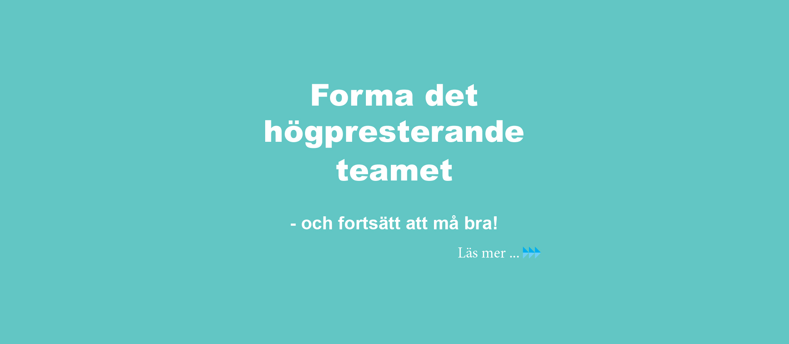

Build the high-performing team
How can your group perform even better, become a high-performing team and still continue to thrive? Would you like to unlock the untapped potential within the group?
Every group has great potential that can be strengthened and developed. It is not about increasing the pace, working harder or making greater sacrifices. It is about doing the right things at the right time, making the most of the conditions and capabilities in any given situation. When the group feels good, it performs well – and the organisation always benefits long-term from strong performance.
The group receives help with ideas and formulating actions that allow individuals to demonstrate, apply and deepen new learning. As coach, I help focus and systematically explore specific questions and opportunities that are important for reaching the desired goals.
I work extensively with empathic communication, also known as NVC (Non-Violent Communication). It is a powerful tool for improving interaction within the group and creating a safe communication environment.
The FIRO model describes how groups develop through three phases: inclusion, control and openness. Understanding where the group currently stands makes it possible to direct efforts appropriately.

DISC is a well-proven tool for mapping behaviours. Each individual completes a questionnaire which is then analysed together with me as guide. The results help each person understand their own and others' behaviours.
Clear graphs and descriptions provide a concrete basis. The results often generate genuine insights and a clear understanding of personal strengths and areas for improvement. They also provide a good picture of why certain people work better together – and what needs to be strengthened in specific areas.
The road to successful leadership is an effective team that generates results. Everyone is different – and that is not an obstacle. On the contrary, differences are an asset when you know how to make the most of them.
I always conduct a preliminary study to ensure I can meet your expectations. Get in touch!
Contact us